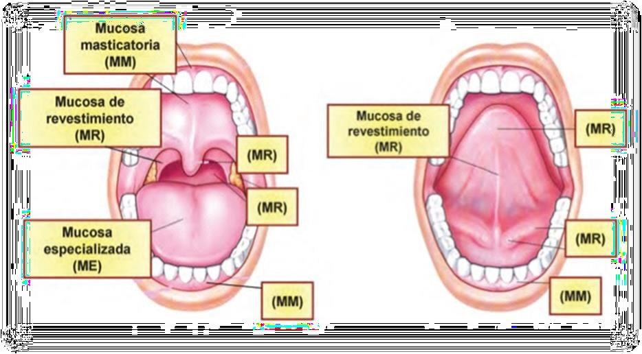
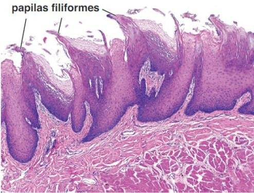
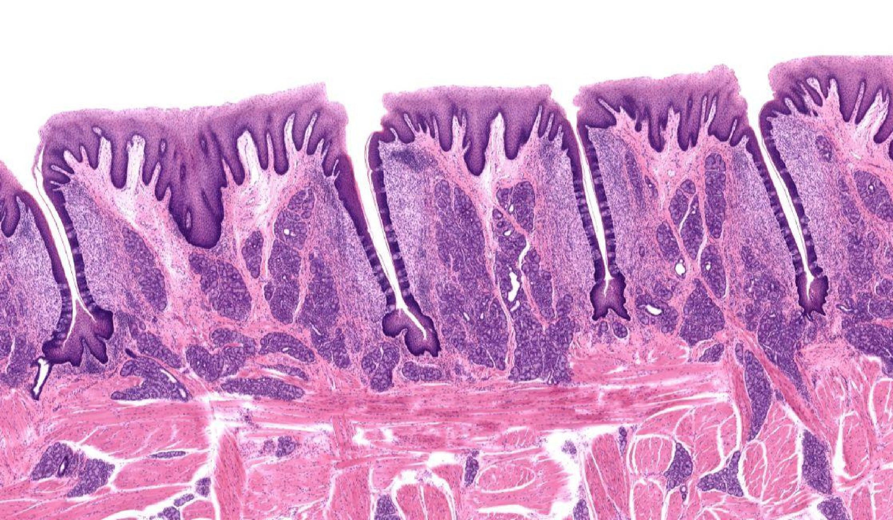
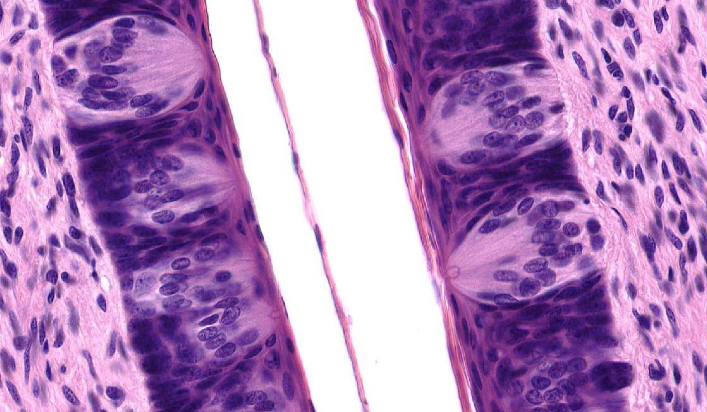
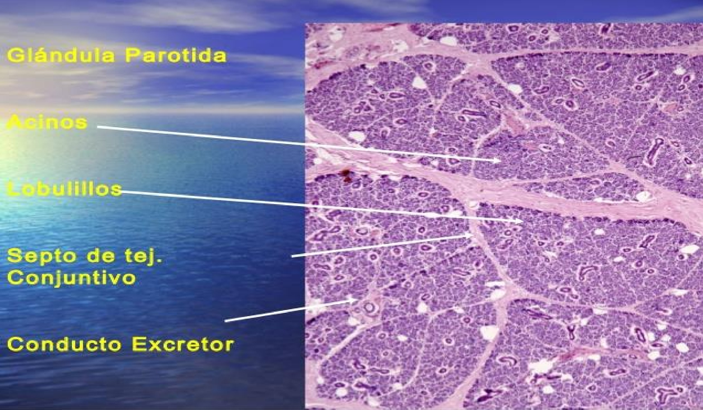
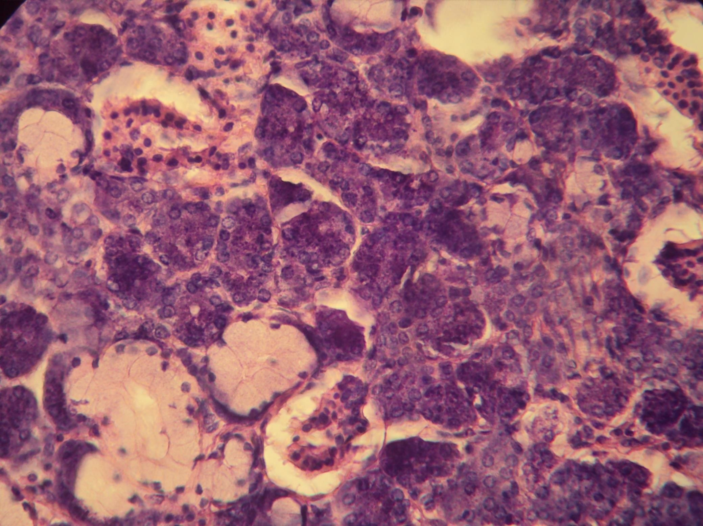

ClinicusMed · Dossiê Clinicus — Padrão de Excelência
| Função da mucosa digestiva | Exemplo |
|---|---|
| Secreção | Enzimas, ácido clorídrico, mucina, anticorpos |
| Absorção | Vitaminas, água, eletrólitos, componentes biliares, colesterol |
| Barreira | Impede entrada de substâncias nocivas, antígenos e micro-organismos |
| Proteção imunitária | Tecido linfoide na mucosa (MALT) |

A cavidade bucal inclui língua, dentes e periodonto, glândulas salivares maiores e menores e amígdalas. Divide-se em:
| Região | Limites |
|---|---|
| Vestíbulo | Espaço entre lábios/bochechas (fora) e dentes (dentro) |
| Cavidade bucal propriamente dita | Palato duro/mole (acima), língua e assoalho (abaixo), istmo das fauces (atrás) |
| Tipo de Mucosa | Onde | Características |
|---|---|---|
| Masticatória | Gengivas e palato duro | Epitélio plano estratificado QUERATINIZADO (ou paraqueratinizado) — parecido com a pele, mas sem estrato lúcido |
| De revestimento | Lábios, bochecha, assoalho da boca, face ventral da língua, palato mole | NÃO queratinizado (só estratos basal, espinhoso e superficial); recobre músculo, osso e glândulas |
| Especializada | Superfície dorsal da língua | Contém papilas e corpúsculos gustativos — percepção do gosto |

| Papila | Características | Corpúsculos gustativos? |
|---|---|---|
| Filiformes | Menores e mais abundantes. Projeções cônicas muito queratinizadas, apontam pra trás | ❌ NÃO possuem |
| Fungiformes | Forma de cogumelo, mais altas, vistas a olho nu como pontos vermelhos. Menos queratinização | ✅ Sim |
| Caliciformes (circunvaladas) | 8 a 12 papilas, forma de cúpula, logo à frente do sulco terminal. Rodeadas por sulco com glândulas de Von Ebner (secreção serosa) | ✅ Abundantes |
| Foliadas | Cristas baixas paralelas separadas por fendas profundas. Pouco reconhecíveis em idosos | ✅ Abundantes |


Localizam-se nas papilas fungiformes, caliciformes e foliadas. Aparecem como estruturas ovaladas pálidas que atravessam todo o epitélio, com um poro gustativo no vértice.
| Tipo celular | Função |
|---|---|
| Células neuroepiteliais (sensoriais) | Receptoras do gosto — as mais abundantes |
| Células de sostén (sustentação) | Suporte estrutural |
| Células basais | Menos abundantes — células-tronco (madre) do corpúsculo |
| Tipo | Exemplos | Conduto |
|---|---|---|
| Maiores | Parótida, submandibular, sublingual | Conductos excretores longos, desembocam na cavidade oral |
| Menores | Linguais, labiais, bucais, molares, palatinas | Na submucosa das diferentes regiões da boca |
Ambas se originam do epitélio bucal embrionário. As glândulas maiores têm cápsula de T.C. com septos (vasos e conductos) dividindo o parênquima em lóbulos e lobulillos — ricos em linfócitos e plasmócitos (anticorpos salivares).

A sialona = ácino + os segmentos da via de excreção (conduto intercalar, conduto estriado, conduto excretor maior). Composta por células mucosas (secretam mucígeno) e/ou serosas (secretam proteínas).
| Segmento | Epitélio |
|---|---|
| Conduto intercalar | Cúbico — parte do ácino |
| Conduto estriado | Cúbico simples → cilíndrico simples com estriações |
| Conductos maiores | Cúbico simples (menor calibre) → cúbico estratificado/cilíndrico pseudoestratificado → plano estratificado perto da boca |

| Glândula | Tipo | Conduto principal | Observação |
|---|---|---|---|
| Parótida | 100% SEROSA | Conduto parotídeo (de Stensen) | Frequentemente com bastante tecido adiposo |
| Submandibular | MISTA (predomínio seroso) | Conduto submandibular (de Wharton) | Ácinos mucosos "coroados" por semiluas serosas (artefato de corte) |
| Sublingual | MISTA (predomínio mucoso) | Múltiplos conductillos → submandibular ou direto no assoalho (conductos de Bartholín) | Unidades secretoras mais tubulares que acinosas |
Vamos acompanhar um paciente com dor e aumento de volume na região da glândula submandibular, relacionando o caso à histologia das glândulas salivares. O caso evolui em 3 níveis — clica em cada um pra ver como as coisas vão se desenrolando.
A Clinicus selecionou este conteúdo para complementar seu estudo. Não substitui a leitura do resumo — o resumo ensina, o vídeo reforça.
Carregando recomendações...
O sistema guarda, no seu navegador, quais cards você já sabe bem e quais precisam voltar mais cedo — cada vez que você avalia um card, ele recalcula quando ele deve voltar.
10 questões, do mais básico ao mais puxado. Escolhe uma alternativa, depois clica em "Ver comentário completo" — vale a pena ler até quando você acerta, porque o comentário explica cada alternativa, não só a certa.
Todas as imagens desse capítulo, reunidas num só lugar pra revisão rápida.